Please Note:
●The 1200Mbps rate of this product is composed of two working frequencies of 2.4G and 5G, 2.4G 300Mbps+5G 867Mbps dual-band concurrent, With four Antennas,with less interference, high speed, wide transmission distance coverage, and better wall penetration performance.
●We suggest you to insert WiFi USB Adapter into back USB port of your Computer,because usb port in the back can provide more power.(The USB interface on the front of some computer hosts may have insufficient power or is not supported)
Product Features:
1. Dual-frequency switching, supporting two working frequency bands of 2.4GHz and 5GHZ;
2. Optimized Four-antenna combination, high signal gain, 180-degree free rotation design;
3. The USB3.0 transmission rate is as high as 5Gbps, which effectively improves the transmission stability of the network card, and the high-speed transmission does not freeze;
4. Heat dissipation hole design, effective and rapid cooling to maintain normal working environment and prolong service life;
5. Strong high-speed wall-penetrating Four-antenna signal strong and high transmission.
Product Specifications:
Product Name: VAORLO 1200Mbps WiFi USB Adapter
Product interface: USB3.0
Product frequency band: 2.4G+5G
Transmission rate: 300Mbps+867Mbps=1200Mbps
Antenna: 4 external antennas
Support system: WindowsXP/7/8/8.1/10/11
Product size: 27x80x71mm
Fast Installation Guide:
1. Plug the WIFI adapter into the computer USB port
2. Open "This PC" or "My Computer"
3. Double-click to open [CD drive]
4. Click [Install] to automatically install the driver. After the driver is installed, the interface will automatically disappear.
5. Click the "WIFI logo" in the lower right corner of the [Task Bar], select Connect to WIFI, click Connect, and you can use it.
●Supported operating systems: WindowsXP/Vista/Win7/Win8/Win8.1/Win10/Win11.
(Since Microsoft has stopped service support for XP system, it is not recommended to use XP system)
●Since the WIFI adapter itself does not have a soft AP launch driver, the "WIFI hotspot function" needs to be used with third-party applications, such as 360, WIFI Sharing Master, and other APPs.
Package list:
1x1200Mbps WiFi USB Adapter
(Warm Tips:We suggest you to insert wireless dongle into back USB port of your desktop,because usb port in the back can provide more power.)
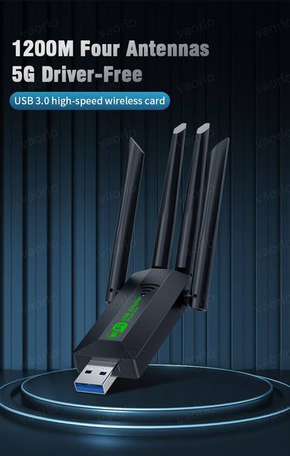
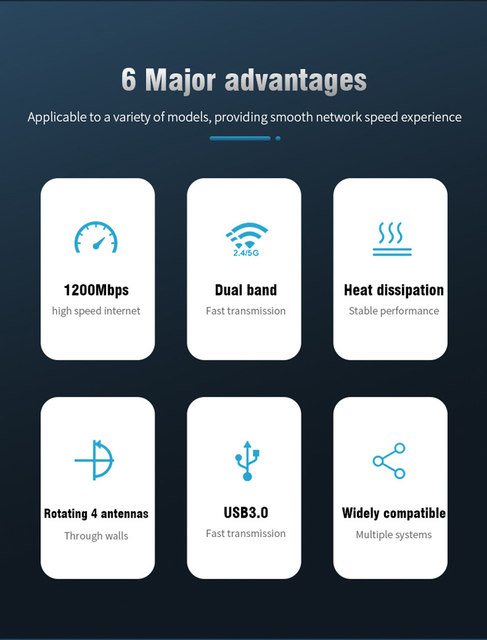
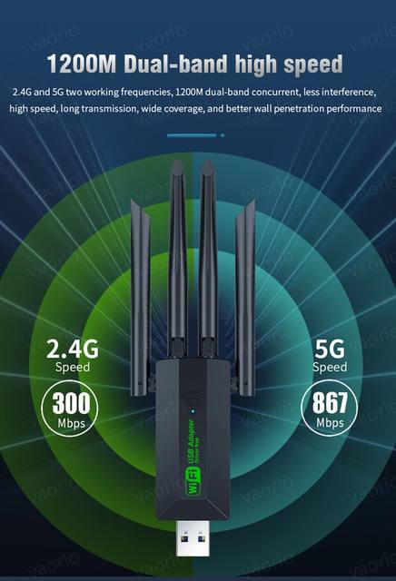
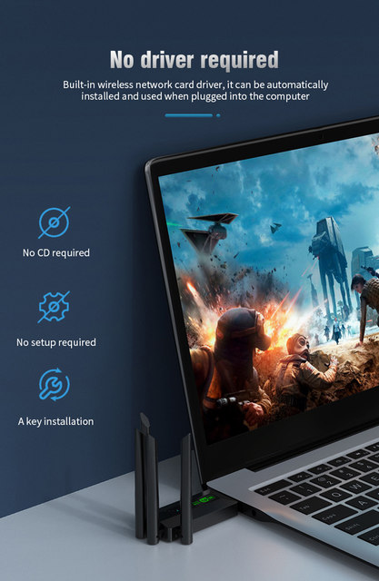
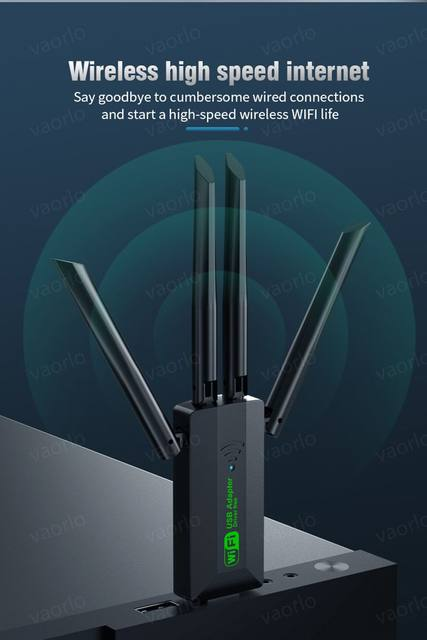
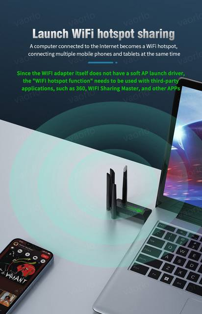
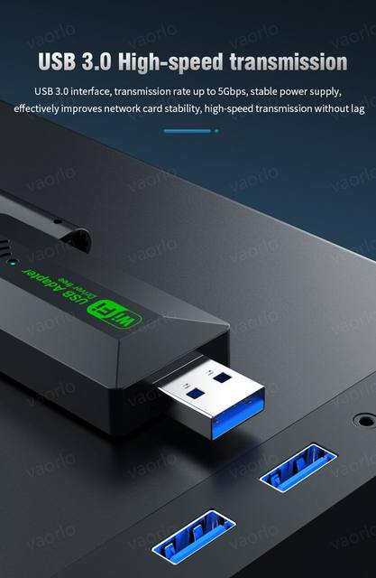
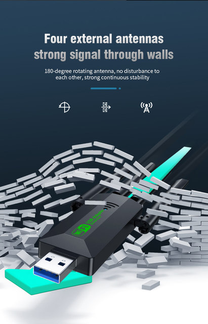
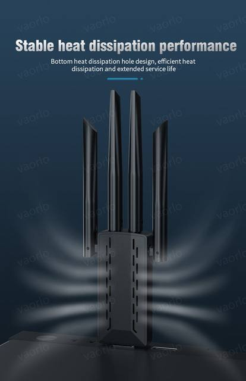
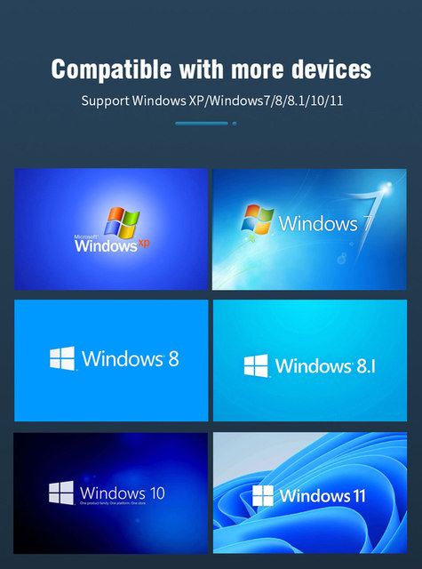
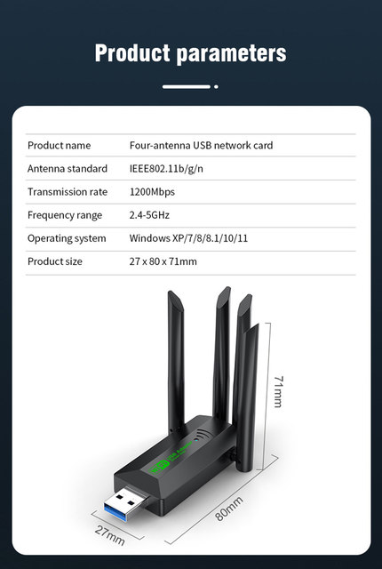
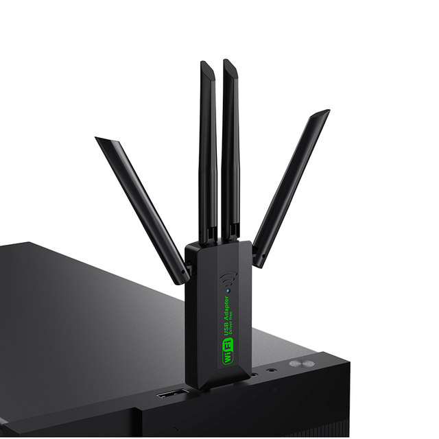
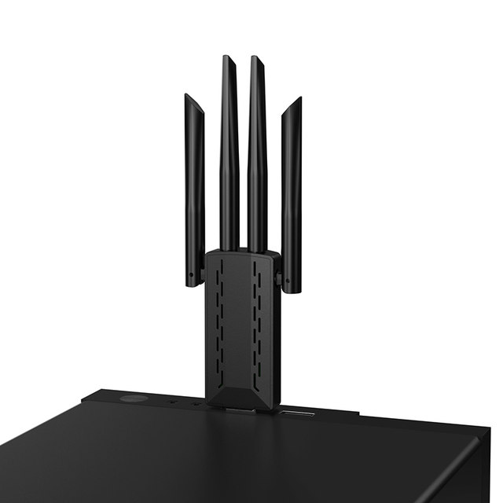
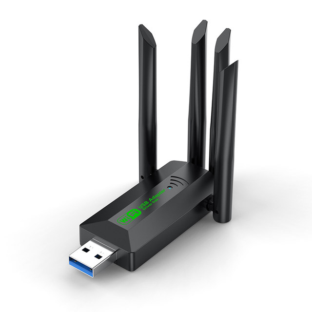
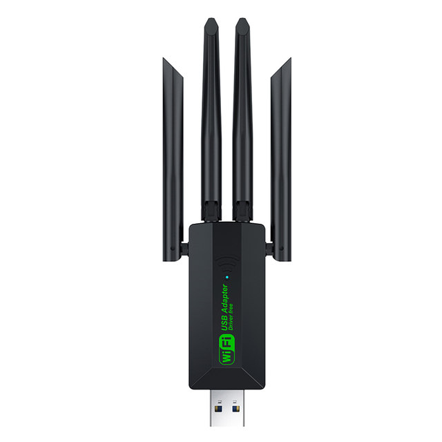
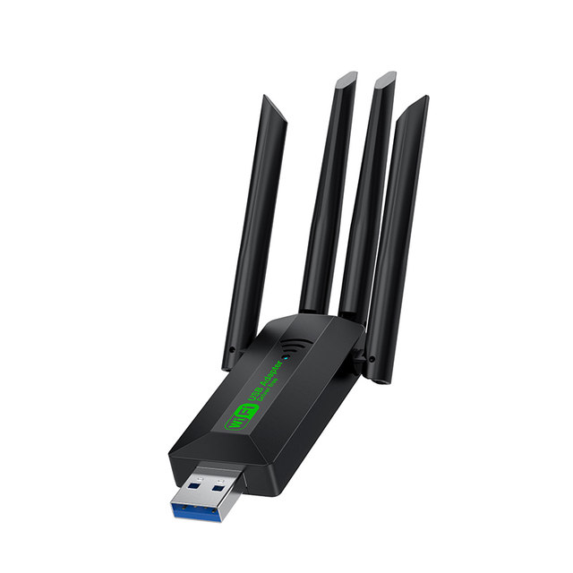
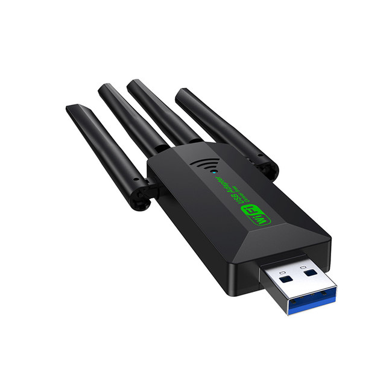
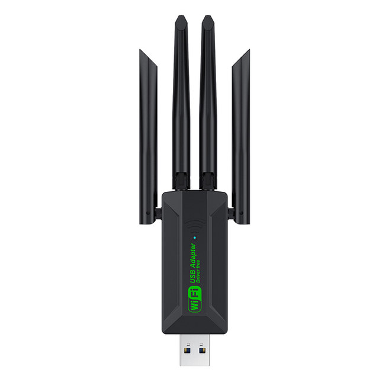